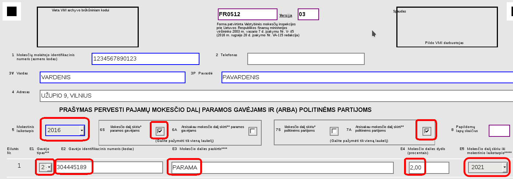

Prašymas skirti 2% GPM paramą asociacijai „Atvirasis žemėlapis“

Jei norite padėti asociacijai „Atvirasis žemėlapis“, galite skirti 2% GPM paramą. Ši parama niekaip nesusijusi su naryste asociacijoje. T.y. galite būti nariu ir neskirti paramos, galite skirti paramą ir nebūti nariu.
2% GPM parama (kaip ir bet kokia kita finansinė parama) bus naudojama:
- Mokesčiams už asociacijos turimus domeno vardus: openmap.lt, openstreetmap.lt
- Mokesčiams už asociacijos valdomus serverius/svetaines
- Konferencijoms, seminarams, mokymams rengti.
Prašymą skirti 2% GPM galima užpildyti atsispausdinus formą, ją užpildžius ir nuvežus į VMI arba išsiuntus paštu. Bet paprasčiausia prašymą užpildyti elektroniniu būdu. Tam užtruksite tik 5-10 minučių.
Elektroninį prašymą galite pateikti oficialioje VMI elektroninio deklaravimo sistemoje: https://deklaravimas.vmi.lt
Visų pirma turėsite prisijungti prie sistemos naudodami sau patogiausią autentikavimo būdą: gal per banką, gal naudodami e-parašą
Prisijungę dešinėje pusėje spauskite nuorodą „Paramos skyrimas“:
Gausite sąrašą prašymo formų, kurias galite pildyti. Pildykite paskutiniąją (3) prašymo formos versiją. Yra keli būdai, kaip formą galite užpildyti, patogiausias/paprasčiausias būdas bus pildyti formą jūsų naršyklėje. Taigi spauskite pirmą mygtuką.
Bus atidaryta paramos prašymo forma, kurioje automatiškai bus užpildyti jūsų duomenys. Taigi jums reikės įvesti tik asociacijos „Atvirasis žemėlapis“ duomenis:

Užpildykite laukus:
- 5. Mokestinis laikotarpis - 2016
- 6S. Mokesčio dalį skiriu paramos gavėjams
- 7S. Atsisakau mokesčio dalį skirti politinėms partijoms
- E1. Gavėjo tipas - 2
- E2. Gavėjo identifikatorius - čia įveskite asociacijos „Atvirasis žemėlapis“ kodą: 304445189
- E3. Mokesčio dalies paskirtis - PARAMA
- E4. Mokesčio dalies dydis - 2,00
Užpildę formą spauskite mygtuką „Klaidų tikrinimas“. Jei viską įvedėte teisingai, ekrano apačioje atsidarys papildoma pranešimų skiltis, kurioje bus parašyta, kad klaidų yra 0 ir trys perspėjimai (informaciniai pranešimai). Jei tikrinimas rado klaidų - jas pataisykite. Tada galite spausti mygtuką „Pateikti deklaraciją“
Viskas. Jūsų paramos teikimo prašymas pateiktas. Kurį laiką VMI sistema tikrins jūsų prašymą. Apie prašymo būseną galite sužinoti e-deklaravimo sistemos pateiktų dokumentų sąraše. Po kažkiek laiko (gal po valandos, gal po dienos, priklausomai nuo VMI sistemos užimtumo) gausite elektroninį laišką, kad jūsų prašymas teikti paramą priimtas.
Viskas. Ačiū! Metų pabaigoje jūsų parama pasieks asociaciją. Metų pradžioje asociacija teiks finansinę ataskaitą, kurioje matysis, kiek paramos gauta (nebus surašyti konkretūs 2% GPM paramą skyrę asmenys, nes tokia informacija iki asociacijos neateina). Taip pat finansinėje ataskaitoje matysite, kaip/kur gauta parama buvo panaudota.